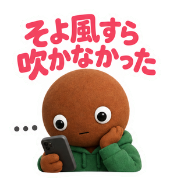
01
そよ風すら吹かなかった
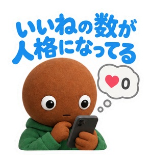
02
いいねの数が人格になってる
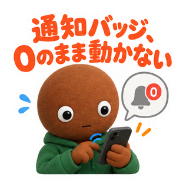
03
通知バッジ、0のまま動かない
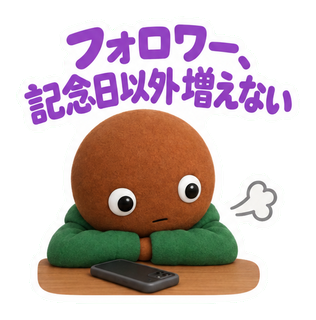
04
フォロワー、記念日以外増えない
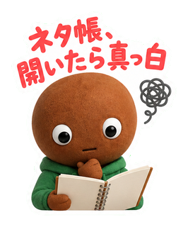
05
ネタ帳、開いたら真っ白
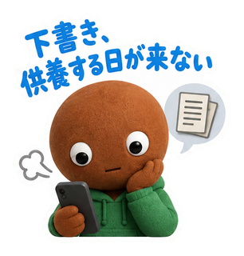
06
下書き、供養する日が来ない
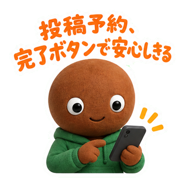
07
投稿予約、完了ボタンで安心しきる
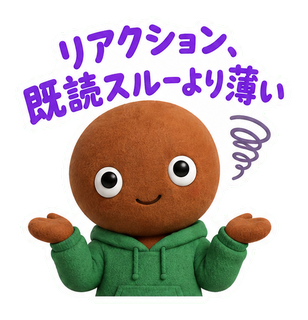
08
リアクション、既読スルーより薄い
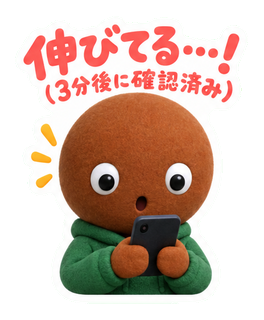
09
伸びてる…！(3分後に確認済み)
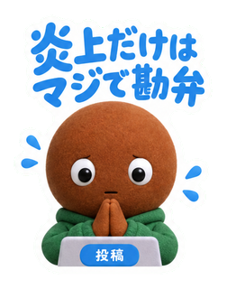
10
炎上だけはマジで勘弁
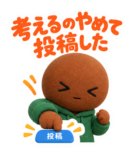
11
考えるのやめて投稿した
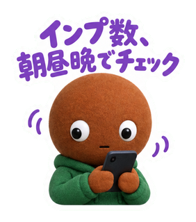
12
インプ数、朝昼晩でチェック

13
保存されたのに いいねは少ない
14
投稿ボタン、指が震える
15
投稿文、直しすぎて原型ない
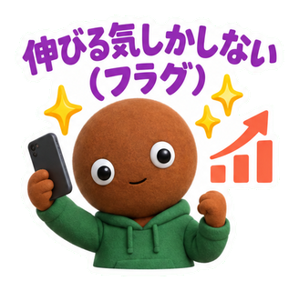
16
伸びる気しかしない(フラグ)
17
全然伸びなかった…
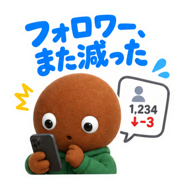
18
フォロワー、また減った
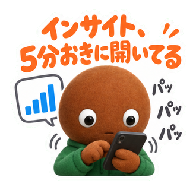
19
インサイト、5分おきに開いてる

20
他の人の投稿と つい比べる
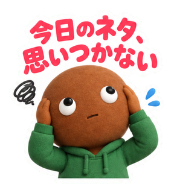
21
今日のネタ、思いつかない
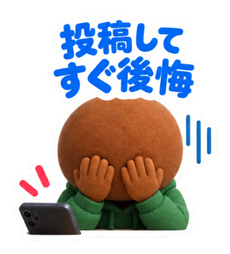
22
投稿してすぐ後悔
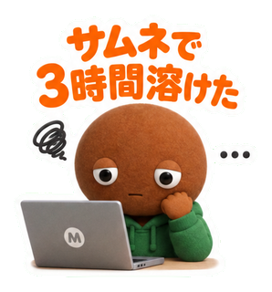
23
サムネで3時間溶けた
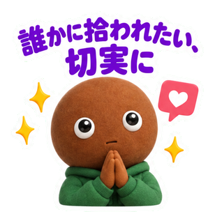
24
誰かに拾われたい、切実に
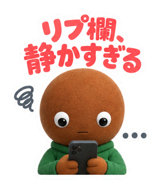
25
リプ欄、静かすぎる
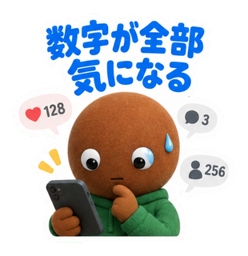
26
数字が全部気になる
27
フォロワー1000人突破！
28
深夜のバズり、見逃した
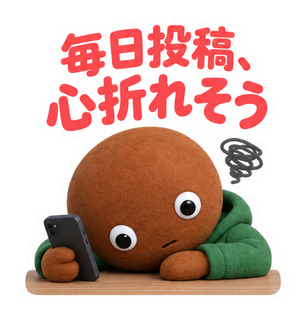
29
毎日投稿、心折れそう
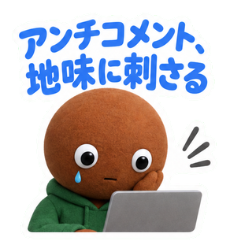
30
アンチコメント、地味に刺さる
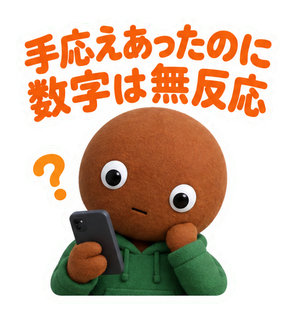
31
手応えあったのに数字は無反応
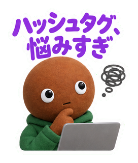
32
ハッシュタグ、悩みすぎ
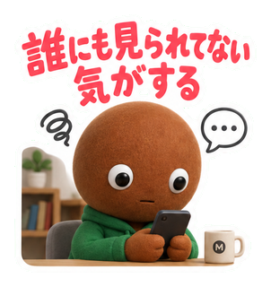
33
誰にも見られてない気がする
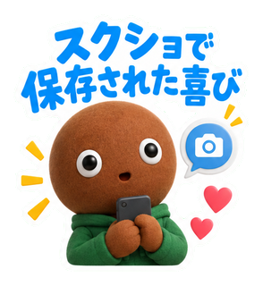
34
スクショで保存された喜び
35
リポストされた瞬間
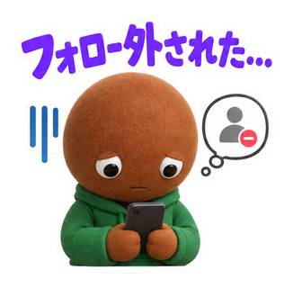
36
フォロー外された…
37
継続だけが取り柄
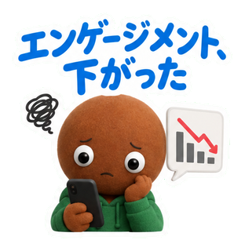
38
エンゲージメント、下がった
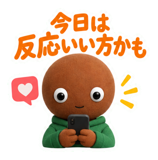
39
今日は反応いい方かも
40
今日も淡々と投稿する